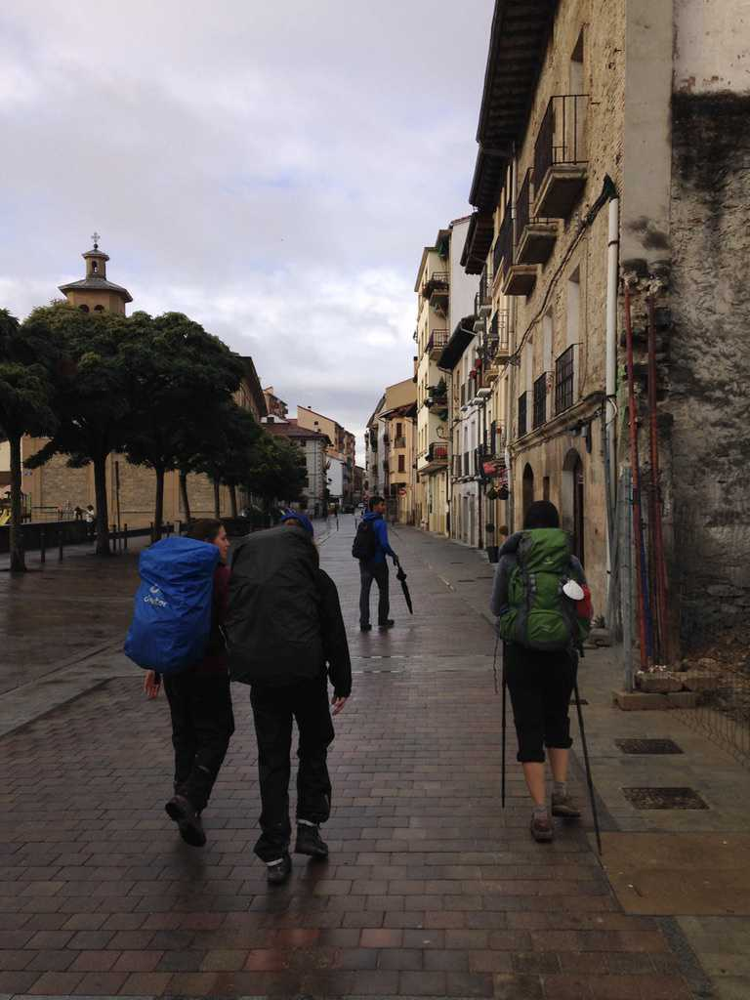
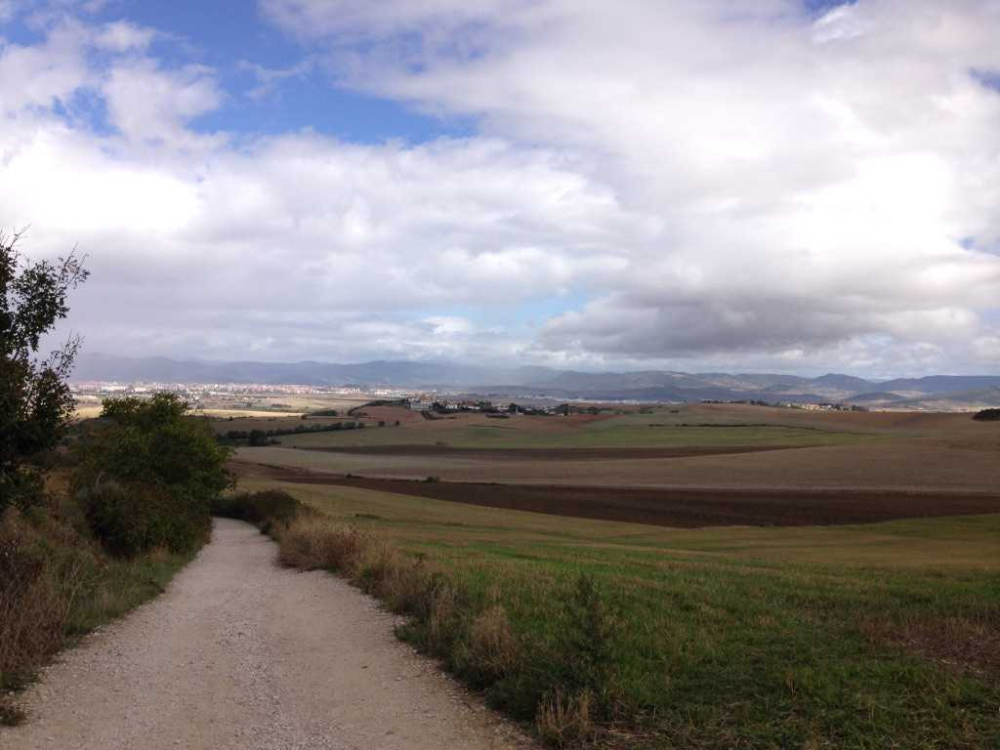
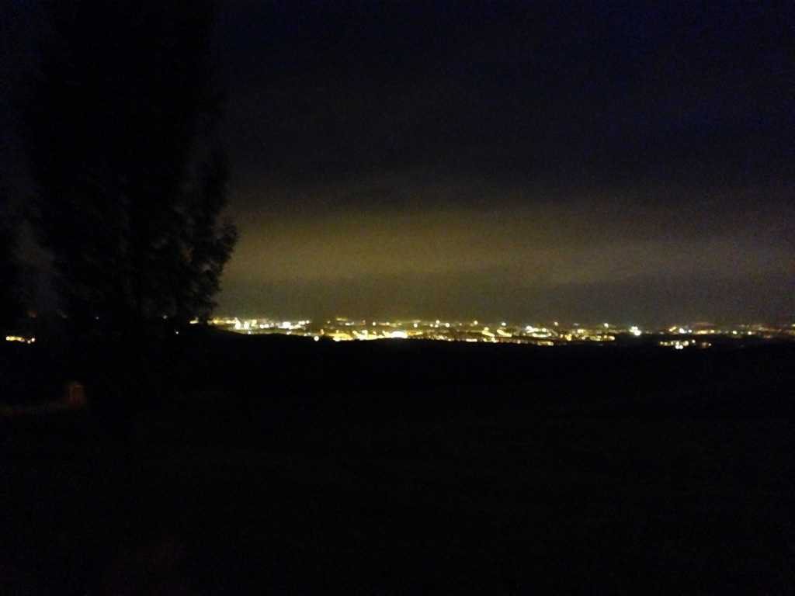

5: The Cusp of Time and Infinity
In the morning we walk to Pamplona, our first city. I run into Maria and chat with her for a brief moment before running off with the girls for breakfast. I didn’t know it then, but that would be my final conversation with her. One thing the Camino teaches you, by nature of necessity, is how to let go. People, places, your past. The present demands it be so.
We stop at a small bakery near the entrance of the city. The owners are friendly, the chocolate and pastries delectable.

This is the first day I distance myself from the group. At our usual lunch time, I decide to continue walking. I feel the need to recenter myself, to have some alone time.
I tell the girls and they understand – they encourage it – and I walk on.
The landscape opens, and I can see for miles on end in every direction. Small farms and grainy fields, naked mountains and green hilltops populating the horizon. As I walk into the vastness, I feel a growing sense of calm, a clarity of mind, and a strengthening of my body and soul.

I reach Zariquiegui much sooner than expected. Marieke arrives shortly after as do Matilde and Franca, and we check into a small albergue attached to a small bar. We reconvene outside and chat over drinks. I’m drinking red wine, Marieke has her milk, Franca and Matilde their beers. Afterwards we separate again and explore town on our own. I walk up a small hill overlooking Zariquiegui, write, and meditate.
On my way back down, I catch sight of Marieke sitting on a curb listening to music. I go over and ask if I can join. She tells me the music she listens to is unusual and “not fit for American ears”, but she eventually concedes her right earbud. The melodies are soothing and enjoyable, but I don’t understand a single word – it is all in French.
After dinner, the girls and I climb a hill at the edge of town and lay on the grass for awhile, gazing at stars, telling stupid jokes, enjoying our newfound friendship. In the distance, tiny orbs of light give shape to the unknown.
I don’t want the moment to end. We are all high on life, strangers united by foreignness, drinking from the cusp of time and infinity, somewhere in the depths of a beautiful and wonderfully dark universe.
